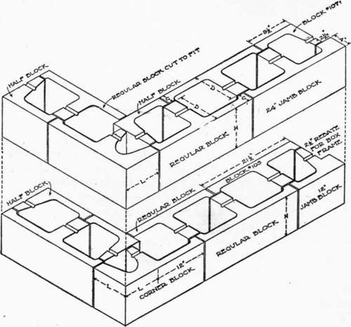

Art. 87. General Methods Of Manufacture. Continued
Description
This section is from the book "Cement And Concrete", by Louis Carlton Sabin. Also available from Amazon: Cement and Concrete.
Art. 87. General Methods Of Manufacture. Continued
The block is now carried, either by hand or cart, to the curing shed, where it is laid on scantlings to admit the air on all sides equally. In case any accident happens to a block in course of manufacture, the mortar should be returned to the mixing box or machine and remixed immediately with a little added water. It is unwise to give room in the curing shed to a block which there is reason to suppose may be imperfect, and thus risk the loss of material as well as labor.
786. Curing
Those who are not familiar with the use and characteristics of concrete may need to be told that moisture is essentia] to the perfect hardening of fresh concrete, and even those accustomed to its use should be reminded that more care is necessary in the treatment of a hollow concrete block in the early stages of hardening, that is, in " curing it, than is required with concrete in large masses. Concrete is almost always mixed with more water than is required for the necessary chemical reactions, and in a large mass it does not easily lose the water except at the surface, yet to obtain a perfect face on mass concrete it should not be allowed to dry out. But in a concrete block the proportion of surface exposed to the atmosphere is relatively so much greater, that precautions against drying out must be correspondingly increased. It is not sufficient that a block be sprinkled once or twice a day and be permitted to dry out between sprinklings — for this may cause blotches in the surface if not more serious defects in strength — but it should be prevented from drying for at least ten days. To this end it is advantageous to provide a curing shed, but, if this is impracticable, at least a canvas protection from sun and wind should be used.
The blocks should be gently sprinkled with a rose nozzle as soon as this can be done without washing the cement, usually after about twenty-four hours, and thereafter kept uniformly moist for at least ten days. The longer they are free from the action of sun and wind the better, and if shed room is restricted they may be carefully removed to the yard after about three days, and covered with canvas. Other materials are sometimes used for covering, such as excelsior; hay, straw, etc., but there is danger of staining the blocks, occasioning a loss greater than the Cost of canvas.
Blocks are seldom fit for use in a building until they are three weeks old, and it is better to allow them to cure or season longer if possible. Even with the present rapid hardening rotary kiln cements they are constantly gaining in strength up to six months. Though briquets made in a laboratory may sometimes indicate very little gain after three months, the conditions are not the same.
Since concrete hardens most rapidly in a warm, moist atmosphere, the room in which the curing is done is sometimes filled with steam. If the cement is sound and the block well made, this should have no injurious effect, and would greatly hasten the time when the block could be used.
For the manufacture of blocks in temperatures below freezing, a heated building is essential for making and curing if perfect blocks are sought. Good work may be accomplished with mass concrete in low temperatures, but with small, hollow blocks it is not the same; there are too many points of attack, and variations in temperature and rate of hardening introduce internal stresses in the hollow structure, to say nothing of the difficulty of obtaining a g©od face under such conditions.
787. Pressed Blocks
Since the presence of cores would interfere with the application of pressure, the method involving such application is practically confined to blocks of the so-called two-piece system. The most common block used in this method is in the form of a T, although L and U forms are also made. On account of the heavy pressure used in the manufacture, it is possible to employ concrete more moist than is used in tamped blocks, and it is usually considered that on this account a larger proportion of broken stone or gravel may be employed.
BLOCKS OF TWO-PIECE SYSTEM.
These blocks are molded in heavy metal molds. These are filled with the mixture, a face plate is laid on the concrete, and pressure is applied, by either hand or machine press. The block is removed from the mold immediately and cured in the same way as tamped blocks.
788. Poured Blocks
The method employed in making blocks of wet concrete is quite different from those described above, inasmuch as neither tamping nor pressure is used to compact the mass, and the block cannot be removed from the mold until the concrete has set. This does away with much of the so-called machinery used in other methods, but necessitates, on the other hand, as many molds as there are blocks to be made in one day.
The molds for this process are of steel or malleable iron with cores of the same material. The mold is set up on a base plate or plank with the cores in place, and filled with the mixed concrete. This is of such a consistency that it is only necessary to cut the mass with a small spade or other implement to insure thorough filling in the corners and about the cores. After twenty-four hours the concrete is hard enough to permit the removal of the molds, but the block is left upon the pallet or base plate where made for several days.
The molds may be set up in the yard or curing shed, and the mixed concrete brought to them in a cart, or the molds may be set up in pairs on a cart specially designed for this purpose, and taken to the mixing platform to be filled and afterwards conveyed to the yard. The advantage claimed for the latter method is that in the trip to the yard the material is compacted in the mold. On the other hand, however, if the material is very wet, there will be a tendency to separate the aggregate from the mortar.
These blocks are usually molded face up, and any special facing desired is placed on top of the block before setting begins. In fact, such facings should be applied immediately after filling the mold, just as a top dressing is applied in concrete sidewalk construction. Good effects may be obtained by finishing with a float, or by sprinkling the top with screenings or pebbles. A very smooth surface is obtained by finishing, with a trowel, a thin layer of mortar containing two parts sand to one cement, but there is always the danger that a troweled surface of rich mortar will hair-crack.
789. Comparison Of Methods
To one who wishes to engage in the making of cement blocks, the selection of the method to be employed is of the greatest moment. Sufficient experience has not been gained in the industry to indicate which method will eventually come into most general use; the indications, however, are rather that all three systems will continue to be employed, each under the conditions to which it is best suited.
The tamped block has the undoubted advantage to the small factory that no great amount of machinery is required, and at present probably more different styles of block are made by this method than by either of the others. The fact that coarse aggregate is not successfully used in this system is one of its disadvantages, for it has been shown elsewhere that a concrete made with a proper proportion of good aggregate is as strong as the mortar alone, and almost always much less expensive. The attempt to cut down the quantity of cement in using this method results in blocks that are porous and permeable, and lacking in the early strength that is essential to the handling of blocks without considerable loss from breakage. The endeavor to make a less porous block without using a very rich mortar throughout has led to the attempt to mold the blocks with a face of richer mortar about an inch thick. This, however, increases considerably the necessary labor in making the block, and raises the question of adherence between the two qualities of mortar, so that it is not very generally approved by practical block-makers.
The pressed block is practically confined to the two-piece system — that is, no single block reaches entirely through the wall. This feature of the system — necessitated by the method of making, since pressure would not be communicated through a thick layer of concrete and give a compact mass — results in some advantages. The chief of these advantages is that there are no webs to carry moisture through the wall, but that horizontal and vertical air spaces are secured throughout. This advantage appears to be practically secured by some of the recent forms of tamped blocks having so-called staggered air spaces.
Other advantages are that a certain proportion of coarse aggregate may be used, and that the pressure is sufficient to compact a somewhat wetter mixture than is required in the tamped block; also that to make blocks for walls of various thicknesses it is only necessary to make slight changes in the molds, and that the blocks are of lighter weight and more easily handled.
The application to the cement block industry of the system of pouring fairly wet concrete into molds in which it is allowed to harden, is comparatively recent, although the use of this method in ordinary concrete work is very familiar. While this method is usually considered as one which requires concrete so wet that it will mold itself and fill all corners without working, there is no inherent reason why it cannot be employed with concrete that simply quakes after slight working. Such a proportion of aggregate as will give the strongest concrete at a given Cost may also be used. The system is thus adapted to the use of the mixture giving the best results in practice, and herein lies its important advantage over other systems, giving a dense block with well-defined angles and perfect surfaces. The so-called cast-stone process is merely a modification of this method, using molded sand in place of steel molds. It is possible to put any desired finish on a poured block if it is molded face up. This is at some additional expense, however, since it involves a separate operation. The disadvantage of the method is the large number of molds required, the slower rate of hardening, and the consequent greater time and space necessary to cure the blocks. These objections cannot be denied, and may prevent the use of the system under some circumstances.
Continue to: